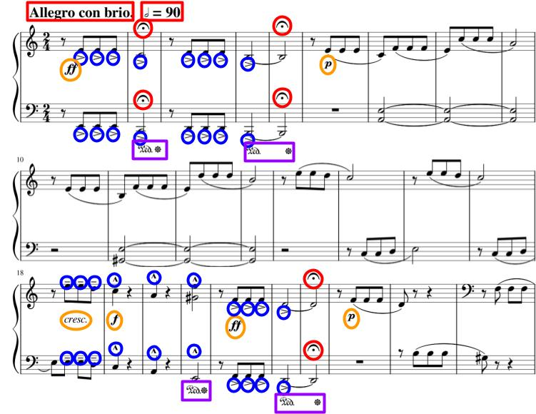

The New Piano: Making Music More Accessible with Artificial Intelligence
June 7, 2024
Abstract
Current AI-Music products across the field's many subdisciplines—namely text-to-music systems, expressive music generation, and singing voice synthesis—strive not to replace musicians, but rather to render music composition more accessible to the masses by providing simple mediums for music creation, assisting with music education, and lowering the cost of music production. However, increasingly influential AI tools fail to cater to a universal audience, an issue that must be remedied lest music loses its role as a global unifying force and society loses interest in music altogether. This article explores the current state of AI-Music research, its potential benefits for accessibility, and the challenges that must be addressed to ensure AI-Music serves musicians and music lovers worldwide.
Introduction
The success of Ricky Martin's song "Livin' La Vida Loca" in 1999 heralded a new era for music, representing the first number one hit song produced entirely on computer (). Just three years later, the Muse Group publicly released MuseScore, an engraving software which has since led to the complete digitization of sheet music creation. In the scale of music history, the introduction of computers to music marks an extremely new development, yet in less than a quarter century, these machines have already achieved musical ubiquity. It was only a decade ago that computer scientists at Google revolutionized music technology once again by developing an artificial intelligence (AI) system that could generate piano melodies (). This advent brought to prominence a new subfield of computer science: AI-Music. At its core, AI-Music involves the application of AI techniques to the domain of music. Musicians are divided: should they fear AI? Commonly argued in AI's defense, calculators did not replace mathematicians, and, in fact, only made them more valuable. For instance, AI has significantly streamlined the sampling process, and certain producers known for sampling, like Metro Boomin, have consequently exploded in popularity. Yet in an already competitive music industry, many other musicians worry that AI-Music harbingers the musical apocalypse and computers have finally arrived to steal their jobs. Jazz musicians, for example, worry that AI systems could render their roles as background musicians obsolete, as a machine learning system trained on a sufficiently diverse data corpus could produce any desired kind of music at a much lower cost. Musicians should not fear.
Current AI-Music products across the field's many subdisciplines -- namely text-to-music systems, expressive music generation, and singing voice synthesis -- strive not to replace musicians, but rather to render music composition more accessible to the masses by providing simple mediums for music creation, assisting with music education, and lowering the cost of music production; however, increasingly influential AI tools fail to cater to a universal audience, an issue that must be remedied less music loses its role as a global unifying force and society loses interest in music altogether.
A Background on Music Technology
Music comprises a fundamental part of human existence, and the rising tide of AI in music must not compromise its crucial cultural role. Humans have a natural disposition for music, despite it offering no clear evolutionary advantages (). Research has shown that music stimulates dopamine production in the reward centers of our brains, perhaps because its chordal resolutions and complex rhythms satisfy our evolutionary desire for pattern recognition (). It comes as no surprise, then, that music has held an esteemed place in almost every culture across human history, ranging from Paleolithic era bone flutes to Ancient Greek lyres to Medieval Ghanaian drums. The relevance of musicians in modern social life speaks to music's continued importance as a cornerstone of human culture. Furthermore, music acts as a unifying force, providing common ground for distinct communities. Historians famously cite the Christmas Truce of 1914, where amidst bitter trench warfare between Allied forces and the Germans, both sides laid down their arms to join together and sing "O Come, All Ye Faithful" (). In 2012, Korean rapper PSY captured the attention of billions of people around the world with his "Gangnam Style," a more modern example of music's role as a great unifier. As AI's role in music rapidly grows, computer scientists must remain aware of the cultural significance of their work. Weak AI-Music systems could cause a loss of appreciation for music and cultural disunity. However, if done correctly, AI-Music products that promote music creation could usher in a golden age of the arts spearheaded by musicians.
The current opposition towards AI-Music very much mirrors historical reactions to the birth of the piano and synthesizer, suggesting that, like those instruments, AI technologies, too, have great potential to open the doors of music production to countless new people. Originally named the fortepiano, the piano rose to prominence in the mid-eighteenth century as a massive and necessary upgrade to the harpsichord, allowing musicians to express themselves through a variety of dynamics. Despite the instrument's evident utility, it was met with protest in the music community. The French argued that the instrument could not be "tolerated by [their] French ears" (). German conservatives, meanwhile, dwelled on the piano's inability to render a vibrato tone and favored the clavichord, hindering the instrument's spread in Germany (). In retrospect, the invention of the piano marked an extremely important turning point in music history, as not only did its dynamic range enable keyboard players to usher in the Romantic Movement (), but its ease of use also rendered music far more accessible in a time when proper musical training was reserved to a wealthy elite. The continued prevalence of the piano speaks to this accessibility. Yet the controversy regarding the piano's invention paled in comparison to the reaction surrounding the synthesizer 200 years later. Upon its creation, this new form of music technology, designed to give composers access to entirely new forms of sound, was criticized as a dehumanizing threat to musical authenticity (). A German musicologist likened the sound of the synthesizer to "barking hell-hounds" (). In fact, in 1969, the American Federation of Musicians went so far as to place severe restrictions on synthesizer use, fearing that the instrument would "'replace'...musicians themselves" (). In spite of this, synthesizers have dominated modern popular music for the past 40 years. While the rise of the synthesizer did warrant some fears in replacing some jobs, the instrument also created far more new positions in fields like electronic music production. The synthesizer also pioneered digital music production software, which massively improved musical accessibility by providing computational music production tools that rivaled their physical, but much more expensive, counterparts. Musicians, once again, lie at a nerve-racking crossroads as computer scientists unleash a new revolutionary form of music technology: AI-Music. Many, naturally, have doubts and worry about job security. But history should teach musicians to integrate this radical new technology into their creative processes, which though scary, means to help their cause. If anything like the piano or synthesizer, AI-Music will render music more accessible and exciting for listeners.
AI-Music spans a broad range of topics. Most research falls under three major areas: text-to-music, expressive music generation, and vocal synthesis. These technologies all help musicians while improving music's accessibility.
Text-to-Music
Though computer generated text-to-music outputs remain weak, this technology can serve to elevate human musical creativity, while opening the door for novice musicians to create beautiful music at a previously inaccessible level. Large Language Model (LLM) based methods, known as text-to-music research, dominate AI-Music. The recent success of LLMs like GPT4 has spurred massive investment by tech giants into further developing these systems. Not only have these policies bolstered the current AI Summer, but as an almost-unintended side effect, the AI-Music research teams at companies like Meta and Google have rode this wave of prosperity and experienced much success as well. In the past two years alone, rival AI-Music teams at Meta and Google both released landmark text-to-music models named MusicGen () and MusicLM (), respectively. Boiled down, given a text prompt as input, a text-to-music model will generate a musical output, known as text-conditioned generation. For instance, the prompt "classic reggae track with an electronic guitar solo" should yield an output reminiscent of Bob Marley's "Waiting in Vain." Additionally, Meta's MusicGen can perform melody-conditioned generation, which continues an input melody provided as sheet music or even whistling ().
The success of recent text-to-music models unsurprisingly frightens musicians, who worry that text-to-music will replace some of their roles as music creators; however, many of these fears are unwarranted, as current text-to-music products fail to address a universal audience. "Large scale generative models present ethical challenges," like the fair collection of diverse training datasets (). Powerful private companies have pioneered text-to-music research, and while massive in-house datasets have enabled model success, these datasets remain shrouded under veils of secrecy and their contents largely unknown. Musicians worry about the misappropriation of their own work by tech companies as training material, and these secretive practices sow distrust within the music community. Furthermore, most text-to-music systems, like MusicGen, fail to offer users "fine-grained control," as one can only control a limited text prompt input, rendering the software impractical for actual music production settings (). If musicians cannot practically employ text-to-music technology, let alone trust it, text-to-music fails to cater to a universal audience.
Despite the need for much progress, text-to-music can still make music more accessible to musicians and non-musicians alike. For musicians, text-to-music systems serve as excellent sources of inspiration when stricken with writer's block. Artists can use AI-Music software to rapidly test a variety of sounds and ideas, which could prove especially useful when combined with melody-conditioned generation. Just like ChatGPT has found use in professional settings to jog users' minds and suggest new ideas, text-to-music could serve a similar function for musicians. By handling small, syntactical details, text-to-music could also allow musicians to experiment with new concepts and transcend musical boundaries, enabling greater human creativity. Alternatively, text-to-music systems could lay the groundwork for a song, from which point experienced musicians step in to refine that original product (). Due to the expensive nature of the music production process, improved efficiency increases accessibility, as lesser production costs lower the barrier to entry for new, often-underfunded musicians. For non-musicians, text-to-music presents as an easily-accessible medium for music creation. Music production has historically required at least an instrument and knowledge of reading music, but text-to-music eliminates these barriers by allowing novice musicians to create amazing music with a mere text box. Text-to-music could serve as a musical gateway, opening the door to music creation and inspiring non-musicians to dive deeper into music.
Expressive Music Generation
Expressive music generation comprises another booming subfield of AI-Music research, and though current models struggle to achieve strong musical understandings, expressive music AI tools could still greatly assist with music education, permitting more people to learn music. Notes on a page alone do not constitute music. When synthesized verbatim, music often sounds robotic and uninspiring. To create good music, an artist forms their unique interpretation of a work through subtle variations in a song's tempo and volume, a process known as musical expression. A lack of expressiveness generally characterizes the performances of beginner musicians, and the presence of musical expression will differentiate the renditions of Mozart's "Rondo Alla Turca" by a world-class pianist and a five year old. There exists significant ongoing research into automating musical expression, known as expressive music generation (). For example, given sheet music for a violin part, an expressive music generation model will synthesize an audio-domain output that emphasizes key notes and slows down at the end of musical phrases (). Expressive music generation poses a difficult, but nonetheless interesting, challenge for computer scientists, as the highly subjective nature of musical expressive features causes substantial variance across different performers, which neural networks struggle to model. Figure 1 analyzes Beethoven's Fifth Symphony to further explain the difficulties of expressive music generation.

Current expressive music generation outputs tend to sound boring and fail to inspire a universal audience. Expressive music generation models inherit many of AI's more general shortcomings, namely a struggle with long-term coherence. Outputs tend to deteriorate in quality over the course of a generated sequence, often to a point of complete incoherence in longer generations (). Furthermore, out of AI-Music's subfields, expressive music generation arguably poses the smallest threat to musicians. History's most famous musicians, like Jimi Hendrix and Freddy Mercury, gained their fame not by recycling old techniques, but by pioneering new musical styles. In contrast, AI, by nature, lacks the capacity to develop new ideas, and can only rephrase those found in its training data. Expressive music generation models will thus only ever yield generic results that do not rival the capabilities and ingenuity of any experienced musician. Generic, unimpressive outputs do not appeal to a widespread audience.
However, expressive music generation systems could still serve as an excellent tool for music education, which would render learning about music much more accessible. Young musicians often struggle to grasp intangible concepts, like phrasing, and could use AI to learn the basics from professional-sounding expressive music outputs. For example, Japanese researchers recently developed an AI system that analyzes the pitch, intensity, and timbre of novice wind-instrument players to provide them with objective feedback on how to improve their musical tone stability (). Nonetheless, beyond the beginner level, musicians will still require human interaction to fine-tune their skills, an excellent example of AI-Music's philosophy of helping, but never replacing, musicians. In western culture, the opportunity to learn music has long been reserved to the upper strata of society: the clergy and the wealthy. Even today, despite impressive advances in music accessibility, the cost of a strong musical education remains expensive in terms of both money and time. Especially true when teaching younger musicians, music instructors often feel that their time is better spent elsewhere, and consequently charge hefty fees to teach inexperienced students. This maintains music's barrier to entry while reinforcing a vicious cycle: high costs scare prospective students, resulting in fewer trained musicians with the necessary skills to teach others, placing even greater demand on the already few available instructors, forcing prices to rise. AI systems could eliminate this vicious cycle by facilitating early music educations, placing less strain on available music instructors while lowering costs, which would dismantle historic barriers while improving accessibility in music.
Singing Voice Synthesis
Singing voice synthesis (SVS) models, meanwhile, perform quite well, but suffer from a lack of diversity and fail to cater to a universal audience; nonetheless, these systems can help independent musicians avoid the expensive vocal-recording and -mixing process, rendering studio music production more accessible. Just last year, Drake's newest hit song "Heart on my Sleeve" made its rounds on TikTok and garnered over two million streams across various music platforms. Here's the catch: it wasn't Drake! An unknown party had managed to meticulously scrape the artist's entire discography and used that data to train a SVS model. This story does not mark an isolated incident, either. SVS models have found use in eerie replications of Frank Sinatra's and Kanye West's voices to sing Nirvana's "Smells Like Teen Spirit" and John Legend's "All of Me," respectively. To a computer scientist, SVS poses the perfect project: musicians generally have hundreds of hours of music collecting dust on the internet that comprise ideal AI training datasets. If an AI-Music researcher has any luck, they might even discover a library of isolated vocal tracks, perfect for training a SVS model.
However, SVS systems face their fair share of problems, and thus do not appeal to all musicians. The question of ethics always persists with SVS, as malicious figures could easily abuse its power and misappropriate an individual's voice. Additionally, current models fail to produce natural-sounding singing, perhaps suggesting a need for both new architectures and training paradigms (). Operating in the audio domain, SVS models also struggle with generating "high-fidelity audio," a problem shared by many AI-Music subfields, like text-to-music (). Also another general problem in the field of AI-Music, SVS faces a dearth of diverse training data, yielding models only capable of singing in English and Chinese. This shortcoming renders the software irrelevant to a significant portion of musicians around the world.
Nonetheless, SVS could still lower costs in studio music production settings, which would make releasing music professionally much more approachable to the average independent musician. Behind every radio-ready hit lies months of planning and production. Catchy vocal tracks require an artist to collaborate with producers and sound engineers, all of which come at a hefty cost. Further considering the non-trivial price of the studio session itself, recording vocals comprises one of the most expensive and time consuming parts of that music production process. These costs help to maintain the music industry's high barrier to entry and necessitate a wealthy background or family connections to land a record deal that funds this process in the first place. Technology has helped to demolish some of these barriers. The growth of social media platforms like TikTok, for instance, has eliminated the need for many of record labels' costly promotion efforts. Consequently, independent musicians comprise the "fastest-growing segment of the music industry" (). SVS systems could find use as AI music production assistants, akin to GitHub's coding copilot, that help artists avoid the costly vocal-recording and -mixing process as much as possible. By rendering the studio music production process more affordable, SVS systems could level the playing field in an industry historically difficult to break into without immense wealth or social status.
The Future of AI-Music
As AI-Music plays an increasingly influential role in the music community, computer scientists must quash the field's internal issues, namely bias in training datasets, and thus models, that currently prevent AI-Music from appealing to a global audience. The field can attribute its bias problem to two main issues: copyright laws restrict available data and the field itself lacks diversity. First, copyright laws constrain AI-Music researchers to public domain data, a narrow subset of available music. American copyright law states that a work enters the public domain seventy years after its creator's death. Consequently, most AI-Music datasets consist entirely of classical and folk music, and just recently did songs from the 1940s begin to enter the public domain. Folk music, in particular, proves popular among AI-Music scientists, as unlike a lot of classical music, its generally simple melodies present an apt challenge for computers to learn how to model (). Historically, the predominantly-white upper class has dominated western music, and so public domain data fails to reflect today's diverse musical landscape. Luckily, though copyright law proves difficult to dispute, the issue will solve itself in time as newer works gradually enter the public domain. Second, due to its nascency, the AI-Music workforce remains tiny and consists almost entirely of White and Asian males. People tend to prefer the music to which they grew up listening. AI-Music researchers often remain unaware of this inherent bias and fail to consider types of music other than western and Asian in the first place. For example, one of the most popular AI-Music datasets, POP909, consists exclusively of Chinese pop songs (). As a result of colonialism, non-western regions have historically lacked the technology to record most of their music, and AI-Music scientists cannot collect data that does not exist. Yet computer scientists generally resist the laborious task of gathering data in the first place, let alone non-western data, as these efforts do not garner prestige in the academic community. All of these factors create a vicious cycle: models trained on western and Asian music encourage researchers to collect more of it. Meanwhile, data that does not fall into these categories remains uncollected. Again, this problem should solve itself in time. As any field matures, researchers place increasing emphasis on debiasing efforts as funding for foundational research plateaus (). As a result of these issues, current AI-Music training datasets contain a disproportionate amount of western and Asian music, and "generated samples ... reflect [those] biases" (). Unfortunately, this renders a lot of current AI-Music systems irrelevant to a significant portion of the globe. However, as these problems resolve themselves over time, AI-Music will gradually reach a more universal audience.
To guide future development in their field, computer scientists can look to the success of a few key AI-Music products that succeed at reaching a wide audience, all of which follow the same trend: musicians are more likely to accept AI tools that do not completely disrupt their established workflows. Electronic music producers apply "low frequency oscillator (LFO) driven audio effects such as phaser, flanger, and chorus" to synthesizers. Manually creating these effects poses an extremely difficult and tedious task, but neural networks like LFO-Net can model them instead (). Stem-separation comprises another part of music production, which involves painstakingly splitting a song's raw waveform into multiple distinct "stems," such as the vocal, bass, and drum tracks (). Researchers have sought AI techniques to automate this process, one of the most popular being Spleeter (). In contrast to other, more dominant, areas of AI-Music, musicians generally accept these contributions with open arms. Research has shown that AI automation, on average, increases music production efficiency 41% of the time (). These simple AI tools relieve musicians of tedious tasks, helping to attract new musicians by making music more approachable, and thus more accessible. Unlike many current AI-Music products, these softwares attack specific problems with elegant solutions, and therefore cater to all musicians through undisputable utility. AI-Music scientists can learn a lesson here: instead of wholly uprooting musicians' workflows and livelihoods with overarching AI technologies, researchers should systematically develop tools to fix one small problem at a time.
Conclusion
The future appears bright for AI-Music, and as the field blooms, it will continue to pump out tools that improve musical accessibility while appealing to increasingly larger audiences. A growing workforce of young, enthusiastic researchers will iron out AI-Music's kinks as the field matures. University AI-Music research departments have already enacted diversity-promoting measures, while organizations like the International Conference on Music Information Retrieval, one of AI-Music's premier scientific conferences, encourage and support dataset work. Meanwhile, the current AI Summer will attract top computer-science talent to all of AI's subfields, including AI-Music, hopefully sparking further innovation. AI-Music aims to democratize music production by providing AI tools to musicians. Although music production is a notably human pursuit, millions of people lack the necessary tools to succeed in creating it, justifying AI's role in the musical process. Researchers thoughtfully design AI-Music tools that increase accessibility in music by providing simple mediums for music creation, assisting with music education, and lowering the cost of music production. However, as music comprises a fundamental part of human existence, increasingly influential AI products must cater to a universal audience less AI-Music ruins music as a whole, causing detrimental effects to human culture such as disunity or a loss of interest in music. AI-Music scientists still have much work to do, but it sounds as if we can expect the first number one hit single produced entirely by AI very soon.